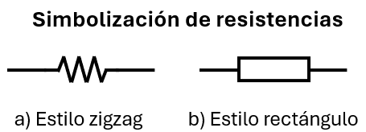
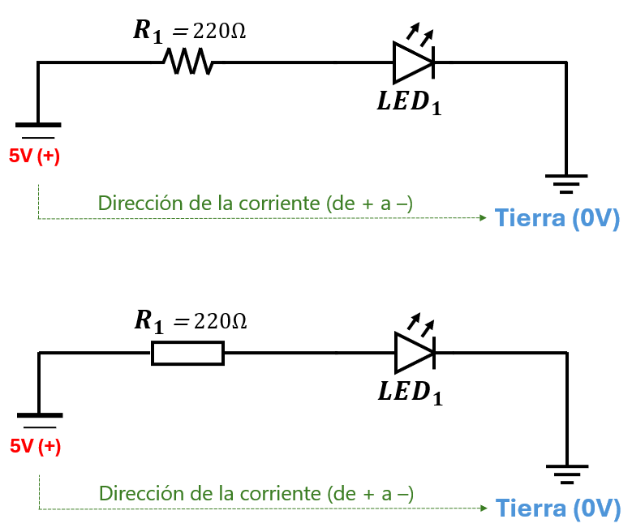
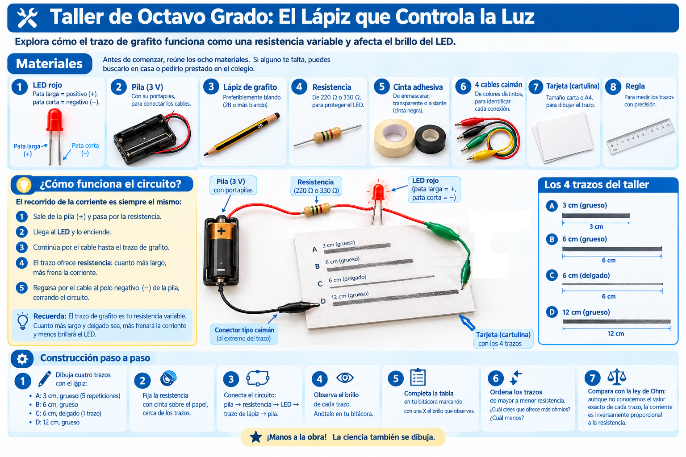
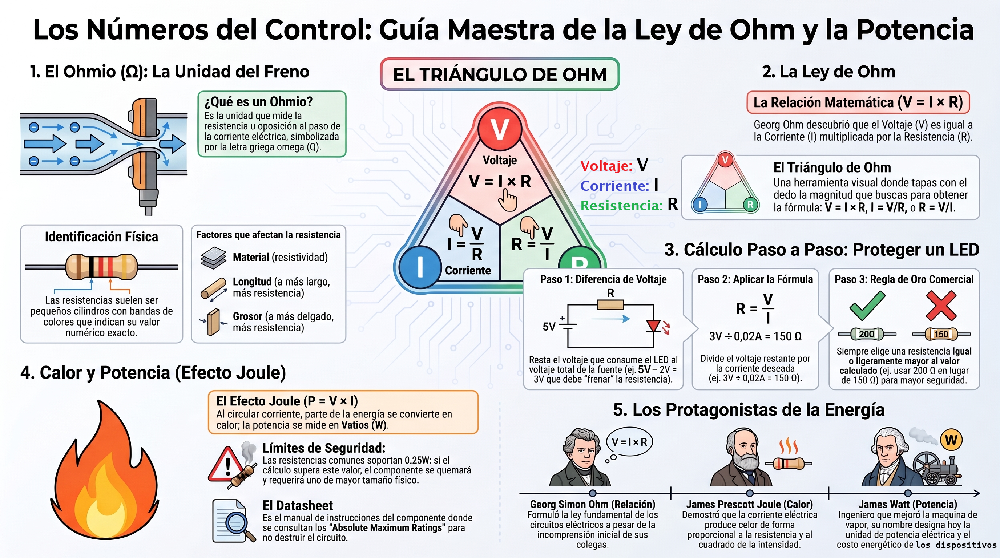

La resistencia es el freno que se opone al paso de la corriente. Ahora necesitamos medirla con números. Para eso existe una unidad: el ohmio, abreviado con la letra griega Ω (omega).
La resistencia se mide en ohmios. Igual que la distancia se mide en metros o el peso en kilogramos. Una resistencia de 220 Ω significa "220 ohmios de oposición al paso de la corriente".
🔎 ¿Cómo se identifica físicamente? Una resistencia es un pequeño cilindro con rayitas de colores. Cada color representa un número, y juntos forman el valor del componente. Esas rayitas se leen con un código de colores que se estudia en electrónica. Por ahora, basta con saber que toda resistencia tiene un valor y que se mide en ohmios. Por ahora, basta con saber que toda resistencia tiene un valor y que se mide en ohmios.

No todas las resistencias valen lo mismo. Su valor depende de tres cosas:
En el taller del lápiz vas a comprobar estos tres factores con tus propias manos.
Con la unidad definida, el científico alemán Georg Ohm descubrió que existe una relación matemática exacta entre las tres magnitudes de un circuito:
La fórmula se puede despejar de tres maneras según lo que quieras averiguar. El triángulo de Ohm te ayuda a recordarlo:
Este es el cálculo más común en electrónica. Vamos a hacerlo con mucho cuidado, porque es la base de toda la protección de componentes.
📌 Datos del problema:
Paso 1 — ¿Cuánto voltaje debe caer en la resistencia?
La fuente entrega 5V. El LED consume 2V. La diferencia es lo que la resistencia debe "quedarse":
Paso 2 — Aplicar la ley de Ohm
Ya sabemos el voltaje que debe manejar la resistencia (3V) y la corriente que queremos que pase (0,02 A). Usamos la versión del triángulo para resistencia:
Paso 3 — Buscar el valor comercial
El valor exacto de 150 Ω no siempre se encuentra en las tiendas. Los fabricantes producen resistencias en valores específicos. Como no queremos exceder la corriente, elegimos el siguiente valor mayor:
🎯 Regla de oro: siempre elegimos una resistencia igual o mayor al valor calculado. Nunca menor, porque sobrepasaríamos al LED.

La ley de Ohm también sirve para calcular la corriente cuando ya conoces la resistencia. Imagina que en el mismo circuito reemplazas la resistencia por una de 330 Ω en lugar de 150 Ω:
Observa: al aumentar la resistencia, la corriente disminuye. Esa es la relación inversa que ya conocías de la mirada comparativa. Con 220 Ω pasarían unos 13 mA, y con 100 Ω pasarían 30 mA. El LED brilla distinto en cada caso: más resistencia, menos corriente, menos brillo.
Cuando la corriente circula por una resistencia, parte de la energía se convierte en calor. Ese fenómeno se llama efecto Joule, en honor al científico inglés James Joule. La potencia disipada se calcula así:
Volvamos al ejemplo del LED:
Las resistencias más comunes soportan 0,25 W (un cuarto de vatio). Como nuestro cálculo (0,06 W) es mucho menor, la resistencia trabajará cómoda y fría.
🔥 ¿Cuándo se quema una resistencia? Cuando la potencia que debe disipar supera su límite. Por ejemplo, si calculáramos 0,6 W para una resistencia de 0,25 W, se sobrecalentaría y se quemaría. En ese caso tendríamos que comprar una resistencia "más gorda", capaz de disipar 1 W o más.
Cada componente electrónico viene con un documento llamado hoja de datos (en inglés, datasheet). Es como el manual de instrucciones del componente: dice cuánto voltaje soporta, cuánta corriente aguanta, a qué temperatura funciona, y mucho más.
Por ejemplo, en la hoja de datos de un LED rojo típico encontrarás que su voltaje directo (Vf) es de aproximadamente 2V, y que su corriente máxima es de 20 mA.
🎯 Regla de oro del ingeniero: nunca diseñes un circuito sin consultar la hoja de datos. La hoja de datos te da los números reales, y la ley de Ohm solo te dice cómo usarlos.
[número de parte] datasheet PDF.
💡 ¿Sabías que…? Los chips que entrenan modelos de inteligencia artificial contienen miles de millones de transistores pequeños interruptores microscópicos que se encienden y apagan millones de veces por segundo. Cada uno disipa una cantidad minúscula de calor, pero sumados son millones los que trabajan a la vez. Controlar ese calor es uno de los mayores desafíos de la industria.
Ya conoces la ley de Ohm. Ahora vamos a aplicarla con el experimento del trazo de lápiz. El grafito es una resistencia variable: puedes modificar su valor solo cambiando el largo o el grosor del trazo.

Antes de comenzar, reúne los ocho materiales. Si alguno te falta, puedes buscarlo en casa o pedirlo prestado en el colegio.
| # | Material | Detalle |
|---|---|---|
| 1 | LED rojo | Pata larga = positivo (+), pata corta = negativo (−) |
| 2 | Pila (3 V) | Con su portapilas, para conectar los cables |
| 3 | Lápiz de grafito | Preferiblemente blando (2B o más blando) |
| 4 | Resistencia | De 220 Ω o 330 Ω, para proteger el LED |
| 5 | Cinta adhesiva | De enmascarar, transparente o aislante (cinta negra) |
| 6 | 4 cables caimán | De colores distintos, para identificar cada conexión |
| 7 | Tarjeta (cartulina) | Tamaño carta o A4, para dibujar el trazo |
| 8 | Regla | Para medir los trazos con precisión |
El recorrido de la corriente es siempre el mismo:
💡 Recuerda: el trazo de grafito es tu resistencia variable. Cuanto más largo y delgado sea, más frenará la corriente y menos brillará el LED.
| Trazo | Largo | Grosor | 😃 Brillante | 😐 Medio | 😞 Apagado |
|---|---|---|---|---|---|
| A | 3 cm | Grueso | |||
| B | 6 cm | Grueso | |||
| C | 6 cm | Delgado | |||
| D | 12 cm | Grueso |
Si duplicaras la longitud de un trazo, ¿qué esperarías que pasara con su resistencia? ¿Y con el brillo del LED? Justifica usando la ley de Ohm.
💡 Sobre instrumentos de medida: en este taller no necesitas instrumentos especiales. La comparación de brillos te permite estimar la resistencia relativa de cada trazo.
⚠️ Seguridad: trabaja siempre con 3V o 5V. Nunca uses voltajes de pared (110V o 220V). Siempre usa la resistencia de protección con el LED.
La ley que estás estudiando no la descubrió una sola persona. Tres científicos de tres países aportaron piezas clave, y cada uno enfrentó dificultades para que su trabajo fuera reconocido.
Ohm nació en Erlangen, Baviera (actual Alemania), hijo de un cerrajero autodidacta en matemáticas. Trabajó durante años como profesor de secundaria en condiciones modestas. En 1825, usando el galvanómetro de Schweigger, empezó a experimentar con la relación entre la corriente que circulaba por un alambre y la diferencia de potencial aplicada.
En 1827 publicó su obra "La cadena galvánica, tratada matemáticamente", donde formuló la ley que hoy lleva su nombre. La comunidad científica de su tiempo no la aceptó de inmediato. Se sintió tan decepcionado que se retiró de la investigación durante años. En 1841, la Royal Society de Londres le otorgó la Medalla Copley, y en 1849 —ya con 60 años— fue nombrado profesor en la Universidad de Múnich. Murió cinco años después.
Joule nació en Salford, Inglaterra, en una familia rica de cerveceros. Fue educado en casa y recibió lecciones del químico John Dalton. Durante la mayor parte de su vida trabajó en la cervecería familiar, y aprovechaba las noches para experimentar con electricidad y calor.
En 1840 formuló la ley que lleva su nombre: la cantidad de calor producida por una corriente eléctrica es proporcional al cuadrado de la corriente y a la resistencia del conductor. Sus contemporáneos dudaban de sus resultados porque venía del mundo industrial, no del académico. Fue William Thomson (Lord Kelvin) quien lo apoyó públicamente en 1847. Hoy la unidad de energía lleva su nombre.
Watt nació en Greenock, Escocia. Trabajó como fabricante de instrumentos matemáticos en la Universidad de Glasgow. En 1764, al reparar una máquina de vapor de Newcomen, notó su enorme ineficiencia: perdía vapor en cada ciclo. En 1769 patentó una mejora clave —un condensador separado— que cambió la historia de la industria.
A diferencia de Ohm, Watt vivió para ver su invento adoptado en todo el mundo. En 1882, 63 años después de su muerte, la Asociación Británica de Ingenieros propuso el watt como unidad de potencia en su honor. Su nombre aparece cada vez que hablamos del "costo energético" de cualquier aparato: desde una bombilla hasta los grandes centros de datos de IA.
Los tres aportaron piezas distintas: Ohm describió la relación entre voltaje, corriente y resistencia; Joule describió el calor que esa corriente produce; Watt dio nombre a la potencia que se consume. Juntos son la base de toda la electrónica moderna.
Fuentes: biografías de la Royal Society, la Enciclopedia Británica y archivos históricos de ingeniería.
¿Qué pasaría si conectas un LED directamente a una pila de 5V sin resistencia? Se quema en segundos. Dale play y descubre cómo la ley de Ohm te permite calcular exactamente qué resistencia necesita cada componente.
💡 Ten tu calculadora o tu cuaderno a mano: hay cuentas que querrás hacer tú mismo.